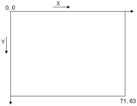

CodeRuler gives you the opportunity to pit your Java programming skills against other teams in a medieval world of conquest. Each team will write a Java class which represents and controls a MyRuler. Your ruler (class) will be placed in a simulated battle along with rulers from other teams.
The game pits rulers against each other in a series of matches. A match consists of up to six rulers competing with each other. Each ruler starts a match with one castle in a random location on a finite two-dimensional grid of squares, with the same amount of peasants and knights as the other rulers. The task of a ruler is to give orders to its peasants, knights, and castles.
During each match, each ruler can accumulate “points.” Rulers can earn points in three ways: by ordering peasants to claim land; by ordering knights to capture peasants, knights, and castles of other rulers; and by the number of their peasants, knights, and castles remaining at the end of the match. Rulers with the highest point totals from each match advance to subsequent rounds.
The simulator shows each match on the screen. Knights appear as horse heads, and peasants appear as small stars. The scenery (e.g. lake, mountains, sky, and castle images) does not affect the movement of peasants or knights in any way. On the right hand side of the screen there will be information about the rulers competing in the match. For each ruler there is a console showing its name, school name, current score (points gained so far during the current match), and the total units of land it currently owns. There is a clock at the bottom right that makes one complete revolution for each match. To exit the match at any time, click the red X in the upper right hand corner of the screen.
The rest of this guide shows how to create a ruler and how to invoke its capabilities. You should now try to understand the code structure that your ruler must implement, and discuss the strategy for your ruler to use during the game. It is permissible for you to openly discuss code structure and strategy during this time, even with other teams.
The coding phase of the CodeRuler starts when you get access to your machine. You will use the Eclipse development environment to create and test your ruler. You must use Eclipse to develop your ruler code, since the simulated world runs under Eclipse. During this phase you may not talk to other teams.
You can test your ruler during the coding phase in two ways. First, there will be a private version of the world on your machine. The private world contains a collection of sample rulers with various capabilities (but no rulers from other teams). You may run your ruler in this private world to see how it performs. Only you will be able to see the results of running your ruler in the private world.
The second way to test your ruler is to submit it to the public CodeRuler world. When you submit your ruler to the public world, you will obtain a snapshot on your machine of all other rulers that have been submitted up to that point in time. You will be able to run a public version of the CodeRuler world to watch the performance of your ruler against other players' submitted rulers (and vice versa).
The performance of your ruler in the public world during the coding phase is strictly an opportunity for you to see how your ruler performs against other player's rulers in order to consider making changes.
It is not a requirement to submit your ruler to the public world during the coding phase. However, all teams must submit their final rulers prior to the end of the coding phase to be included in the final tournament.
The final versions of all rulers (the last submission you make) will compete in a tournament which will take place during the IBM Java Challenge dinner tonight. The rulers will initially be grouped randomly into matches with up to five other rulers. After each round, rulers will be regrouped according to the points they have accumulated, and a new round will begin.
All rulers will compete in at least three rounds. After that, eliminations will take place based on points and a new series of rounds will begin. Each ruler will start each new series of rounds with zero points and random regrouping. The team whose ruler earns the most points in the final tournament round will be the winning team.
The remainder of this guide is intended to help you understand how to design and implement your ruler. JavaDoc files are also available, describing the classes and interfaces that relate to coding your ruler.
When you start Eclipse on your machine and open the CodeRuler project, you will find a skeleton for the class MyRuler. This is the class that will contain the code making up your ruler. You may add fields and declare additional methods, use inner classes, and create other Java classes.
The MyRuler class contains stubs for methods required in rulers; you will have to fill in the code in these methods. Modifying these methods is the primary manner in which you create the “personality” of your ruler. You may also add other fields and methods to the MyRuler class or make use of other facets of the Java language to further define its characteristics.
When you have a version of the MyRuler class that you want to test in the private world, save your MyRuler code and then click the “Run against samples” button on the Eclipse toolbar (). If you are not sure about the function of an icon, move the mouse over it to see a ToolTip.
To submit your MyRuler to the public world, save your code and click the “Submit code” button on the Eclipse toolbar ().
When you submit your code, an encyrpted copy of all other teams' current submissions will be downloaded to your machine. This enables you to test and view your performance against the other teams' submissions. To do this, you can now click on the “Run against other teams” button, which has the following icon: .
If you have not yet successfully submitted code, or if you are the first team to submit code, the Opponent selection list will be empty. You may submit your code as often as you want; this is the only way to get fresh copies of the code from other team's to test against. Your last submission will be the one used in the final tournament.The class Ruler is the superclass of MyRuler. It defines several methods that are inherited by MyRuler. These methods can be extremely useful in building your ruler.
Do not modify anything in the Ruler class. When you run your ruler, it will actually run with a different version of the Ruler class from the one you see in your environment. In particular, the Ruler class you will see contains some dummy initialization and return value code that will be replaced when you run in the private or public world.
In addition to the above classes, your environment will contain five Java interfaces that define the interfaces presented by various components of the game, as well as a helper class:
This is the interface of all objects in the simulated battle. Every object implements this interface, which declares methods getX() and getY() that return the location of the object in the world. All coordinates are non-negative values of type int.
This interface extends IObject and defines the interface of all peasants that are currently active in the simulation. Every peasant implements this interface. Peasants can claim land to get points for your ruler. Each time a peasant enters a new square, it claims that square for its ruler.
This interface extends IObject and defines the interface of all knights that are currently active in the simulation. Every knight implements this interface. Knights do not claim land, but they can capture peasants, knights, and castles.
This interface extends IObject and defines the interface of all castles that are currently active in the simulation. Every castle implements this interface. Castles produce more peasants or knights for your ruler at a rate depending on the amount of land the ruler owns.
This defines the interface for all other rulers in the match. It allows you to find out which objects (peasants, knights, and castles) belong to each ruler. These methods are described in further detail below and in the JavaDocs for the CodeRuler environment.
This helper class provides static methods for the CodeRuler world. You can find out who the other rulers are, and how many peasants and knights they each have. These methods are described in further detail below and in the JavaDocs for the CodeRuler environment.
There are two method stubs in the MyRuler class that your team must fill in to identify your ruler. The first is getSchoolName(), which must return a string of no more than 25 characters giving the name of your School or University. Teams that do not assign their school name in getSchoolName() will not be allowed to compete in the tournament.
The second required method is getRulerName(), which must return a string of no more than 25 characters assigning a name to your ruler. You may choose any name you wish for your ruler, but inappropriate names may be modified or the ruler may be eliminated.
The identification methods must not do any computations other than returning the specified strings.
When your ruler is placed into the world, the simulator invokes the initialize() method in your ruler. Put any initialization code you want to have executed into this method. You may make use of the entire API at this time. Be aware that the simulator will provide only a limited amount of time (1 second) for your initialization code to execute before it begins the game. If your initialization code fails to complete within the time limit, your ruler will enter the world in an uninitialized state, with unpredictable results.
Once the simulator finishes its timed calls to each ruler’s initialize() routine, it calls the orderSubjects() method of each ruler in sequential order. This happens once every turn. The code in your ruler’s orderSubjects() method determines what actions your ruler takes during the course of a game. Methods are available on your ruler to query its status, on the World class to query the status of other rulers, and to find the location of objects (for example, your opponent's knights and castles).
To move your knights, peasants, and castles, use the move(), capture(), createPeasants() or createKnights() methods on your ruler. Each turn, you should call these methods for each object that you control to let it know what to do. For instance, to tell your first knight to move east, you would call: move(getKnights()[0], MOVE_E).
orderSubjects() has one parameter. It is the time (in milliseconds) that your orderSubjects() method used the previous time it was called. Since there is a limited amount of time allowed to make each turn, this parameter is useful in determining whether your ruler is in danger of exceeding the maximum amount of time.
A CodeRuler world is a two-dimensional world of 72 units in X by 64 units in Y, with the origin in the top left corner. There is a wall around the outside edge of the world, and objects cannot go beyond the wall. Objects can move freely about the world, unless they bump into another object.
The figure below describes the world:
The world has the following characteristics:
| Owned land | Turns required to produce one peasant or knight |
| >4000 | 4 |
| 2000 | 6 |
| 1000 | 8 |
| 500 | 10 |
| 250 | 12 |
| 125 | 14 |
| <125 | will not produce |
| Action | Points Earned |
| Each peasant captured by a knight | 4 |
| Each knight captured by a knight | 6 |
| Each castle captured by a knight | 15 |
| Claimed land at end of match | 1 point for every 10 squares |
| Each peasant left at end of match | 1 |
| Each knight left at end of match | 2 |
| Each castle owned at end of match | 25 |
The following code snippets show simple examples of various operations which might be used inside a orderSubjects() method. Note that these are separate code snippets, not a single complete orderSubjects() method or MyRuler class. Note also that these are only examples, intended to give you an idea of how to do things within your ruler. Winning rulers will undoubtedly utilize sophisticated strategies which take full advantage of the range of method calls available to them. The code used in the sample rulers is not provided.
The list of methods available to rulers is documented in the JavaDoc descriptions of the classes and interfaces of the CodeRuler environment. The primary challenge in the CodeRuler is for you to decide on a strategy which uses the available methods to optimum advantage for your ruler.
// move peasants and knights all in random directions
import java.util.*;
protected Random rand = new Random();
public void orderSubjects(int lastMoveTime) {
IKnight[] knights = getKnights();
int size = knights.length;
for (int i = 0; i < size; i++) {
move(knights[i], rand.nextInt(8) + 1);
}
IPeasant[] peasants = getPeasants();
size = peasants.length;
for (int i = 0; i < size; i++) {
move(peasants[i], rand.nextInt(8) + 1);
}
}
// for a particular knight, attempt to capture the first opposing peasant or knight
// that is in an adjacent square. Returns true if it was able to find something to
// capture, and false if there were no opponents surrounding it.
import java.awt.Point;
public boolean knightCapture(IKnight knight) {
for (int i = 1; i < 9; i++) {
// find the position
Point np = World.getPositionAfterMove(knight.getX(), knight.getY(), i);
// make sure the position is a valid move
if (np != null) {
IObject object = World.getObjectAt(np.x, np.y);
if (object != null && !object.getRuler().equals(knight.getRuler())) {
capture(knight, i);
return true;
}
}
}
return false;
}
// for a particular knight, move toward and then capture the given opposing peasant. This
// method will not attempt to capture any other peasants or knights and will keep trying
// to move toward the peasant even if there is another peasant or knight in the way
import java.awt.Point;
public void moveAndCapture(IKnight knight, IPeasant peasant) {
// return if the peasant is null or has already been captured
if (peasant == null || !peasant.isAlive())
return;
// find the next position in the direction of the peasant
int dir = knight.getDirectionTo(peasant.getX(), peasant.getY());
Point np = World.getPositionAfterMove(knight.getX(), knight.getY(), dir);
if (np != null) {
// if the peasant is in the adjacent square, capture it. Otherwise, try to keep moving
if (peasant.equals(World.getObjectAt(np.x, np.y)))
capture(knight, dir);
else
move(knight, dir);
}
}